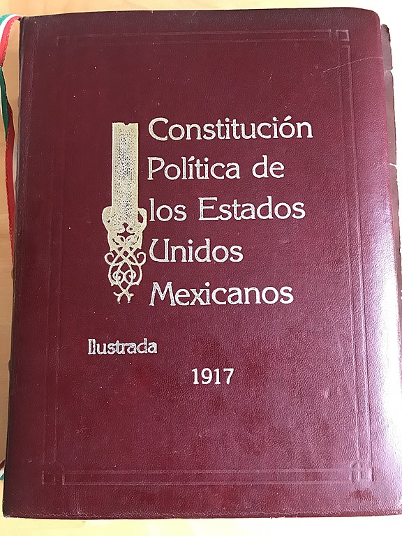
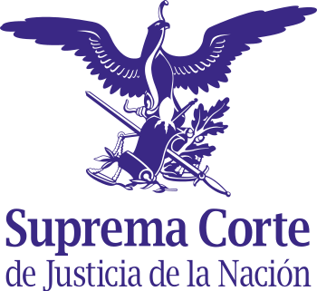
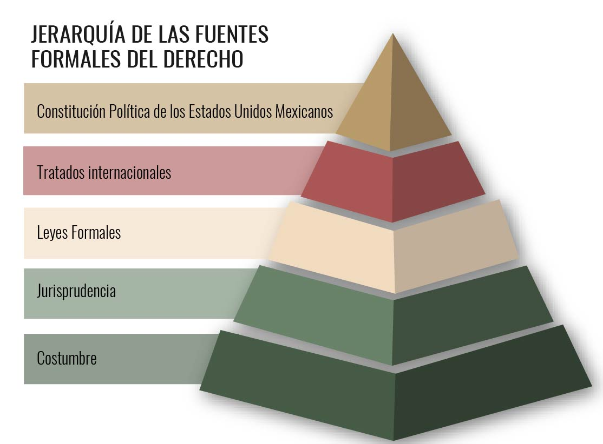

Fuentes del derecho
Como sabes, una ley deriva de una necesidad social ya sea económica, política, religiosa, cultural o bien, cambios o fenómenos naturales. En este apartado conocerás las diferentes fuentes del Derecho y así analizarás cómo se gestan las normas jurídicas.
El término “fuentes del Derecho” alude al origen por el que se establecen las normas y cómo funcionan en una sociedad o época. Son los principios que por su creación, validez y eficacia forman parte del conocimiento jurídico, propician la creación de instituciones y la producción de otras normas.
A continuación, te daremos un ejemplo:
Creación de la ONU y la Declaración de los Derechos Humanos
Universal Declaration of Human Rights. Imagen de United Nations Photo, Flickr.
Al finalizar la Segunda Guerra Mundial, las naciones consintieron en que era necesaria una organización internacional que mantuviera la seguridad y paz en el mundo. Con esto, el 24 de octubre de 1945 entra en vigor la Carta de las Naciones Unidas y establece la Organización Internacional de las Naciones Unidas (ONU). El 10 de diciembre de 1948 se firma la Declaración Universal de los Derechos Humanos, en la que se establece que todos los seres humanos nacen libres e iguales en derechos y dignidad.
Conoce más sobre el tema en el siguiente video:
Clasificación de las fuentes del Derecho
Para estudiar y comprender cómo funcionan las Fuentes del Derecho se han agrupado en tres categorías:
- Fuentes reales.
- Fuentes históricas.
- Fuentes formales.
Fuentes Reales del Derecho
Son los elementos o circunstancias que crean el contenido de las leyes o bien, las modifican según la necesidad. Pueden ser acontecimientos naturales o hechos históricos, tales como la escasez o exceso de algún recurso natural; guerras, conflictos políticos, religiosos o sociales.
Ejemplo:
La emisión del voto femenino en México
El 17 de octubre de 1973 la Reforma Constitucional mexicana reconoció a las mujeres como ciudadanas, con validez en la política para votar y ser votada. Esta fue una importante que llevó décadas de lucha y organización femenil.
Imagen de United Nations freepik, Freepik.
Para conocer más te invitamos a ver el siguiente video y dar clic en la siguiente imagen.
Te invitamos también a revisar la página del INE, para aprender más sobre este tema.
Fuentes Históricas del Derecho
Son los tratados o registros de orden jurídico de civilizaciones antiguas o sociedades del pasado con la finalidad de analizar la normativa legislada a través de la Historia. Estas leyes son pilares en el Derecho y nos permiten tener una referencia de cómo se empleaban las diferentes normativas, cómo evolucionaron o se utilizan en la actualidad, en caso que algunas sigan vigentes. Así mismo, el conocimiento y estudio de las fuentes históricas permiten la creación de nuevas normativas.
Por ejemplo:
El Código Hammurabi (Primer Imperio Babilónico, 1792 -1750 a. C.)
Código de Hammurabi en el museo de Louvre, París, Francia. Imagen de United Nations Mbzt, Wikimedia Commons.
Hammurabi, rey de Babilonia, es conocido por la promulgación del código que lleva su nombre y que marcó un hito en la promulgación de las leyes. Las normativas y penalidades fueron grabadas en piedra y aparece el rey recibiendo de Samash, dios del Sol, las leyes que se debían cumplir para fomentar el bienestar entre las personas. Estas leyes fueron expuestas ante el pueblo para que todos las conocieran. A pesar de ser un compendio de normas rigurosas y castigos, hasta un punto brutal, fue empleado para dar unidad en Mesopotamia y convertirse en una influencia para otras culturas.
Mira el siguiente video que nos explica por qué el Código de Hammurabi es una fuente histórica del Derecho:
El Codigo de Hammurabi una fuente histórica del Derecho.
Fuentes Formales del Derecho
Son aquellas leyes vigentes llevadas a la vida práctica del Derecho y que, de manera estructurada, se aplican a un caso o situación concreta. Para la creación de una nueva ley se sigue un proceso ordenado en las siguientes etapas: iniciativa, discusión, aprobación, sanción, publicación y fecha de vigencia.
Las fuentes formales se dividen en:
- Legislación
Es una fuente directa, ya que contiene a la ley en sí misma. El proceso legislativo se encarga de crear las normas jurídicas, de ahí que sea la fuente formal más importante. Un ejemplo de esta fuente es La Constitución Política de los Estados Unidos Mexicanos.
Puedes descargar la Constitución Política de México en el siguiente enlace, da clic en la imagen.

Constitución Política de los Estados Unidos Mexicanos. Publicada en el Diario Oficial de la Federación el 5 de febrero de 1917 TEXTO VIGENTE Última reforma publicada DOF 06-06-2023. Imagen de EditorLibre123, Wikimedia Commons.
- Jurisprudencia
El poder judicial, por medio de sus órdenes jerárquicos, actúa cuando las normativas jurídicas no son tan claras o específicas para un hecho o caso. Los jueces se encargan de la interpretación de las leyes para la resolución. En México, La Suprema Corte de Justicia de la Nación se encarga de interpretar y esclarecer las leyes cuando éstas no contemplan un caso en concreto.

Imagen de Jarould, Wikimedia Commons.
- Costumbre
Se le denomina como el derecho consuetudinario a aquellas normas que no están escritas, pero que por cotidianeidad, antigüedad y uso generalizado en una comunidad son obligatorias y acordes a las reglas morales del tiempo y la sociedad donde se ejercen siempre y cuando no contradigan a la ley oficial. Estas costumbres son una manera de control social.
Hay tres tipos de costumbres:
- Costumbre según la ley, costumbre secundum legem reguladas por la ley.
- Costumbre ante el silencio de la ley, costumbre praeter legem no reguladas por la ley.
- Costumbre contra ley, costumbre contra legem contrarias a la ley y por ende, no aprobada por el Derecho.
Ejemplo:
Ante las actividades mercantiles, el Estado respeta los usos y costumbres establecidas por los propios comerciantes. Esto se aprueba cuando ambas partes pueden probar con documentación lo acordado y que no se contraponga ante la ley.
Finalmente hay que mencionar que las leyes llevan una jerarquía y que este orden se debe orientar a la defensa de los Derechos Humanos entre otros principios generales. En caso de que una ley u organismo se contradiga con otro se debe apelar al rango máximo de las normativas jurídicas

“La costumbre local prima sobre la general del país, se desprende de la parte final del artículo transcrito y es coherente con la naturaleza de la costumbre, habida cuenta que la costumbres creación cultural y mal podría imponerse la cultura nacional a la de cada uno de los pueblos que la integran”.
Las Fuentes del Derecho
Es momento de reflexionar sobre lo que has aprendido, realiza la siguiente actividad y lee cuidadosamente lo que se pide.